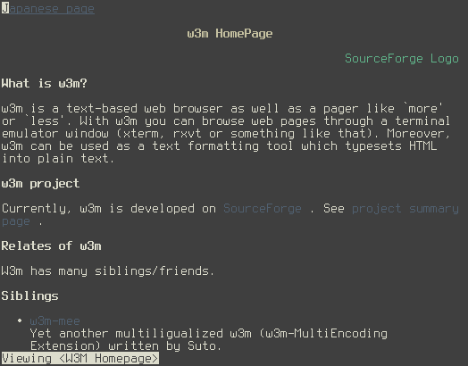

w3m
Visų pirma noriu visus apšviesti, kad pirmoje vietoje internetą naršau su Firefox, Chromium arba Opera. Tačiau kartais atverti svetainę tekstiniame režime yra kur kas patogiau, išvengiant visokių mirguliuojančių spalvų, keistų dizainerio ketinimų ir panašiai.
Interneto naršymui tekstiniame režime esu išbandęs lynx, links, elinks ir w3m. Ilgiau apsistojau prie elinks ir w3m, tačiau galiausiai pasirinkau w3m. Tokį pasirinkimą lėmė tai, kad w3m pateiktas interneto svetainės tekstinis variantas, daugeliu atvejų atrodo geriau, aiškiau ir tiksliau.
{kind=link}
Nors w3m naudoju jau gan seniai, tačiau tik visai neseniai nusprendžiau nuodugniau patyrinėti šį įrankį ir radau visai įdomių dalykų…
W3M valdymas klaviatūra¶
Naudoju nestandartinį LEKPa klaviatūros išdėstymą, todėl labai svarbu, kad naudojamas įrankis lengvai pasiduotų konfigūruojamas šioje srityje. Įtariu, kad w3m kažkokiu būdų gali suprasti ir utf-8 klavišus, tačiau to išsiaiškinti nepavyko. Visa kita veikia kuo puikiausiai. Daugiau ar mažiau, po klavišų kombinacijų konfigūravimo, w3m galima valdyti beveik kaip vi teksto redaktorių. Puiku!
Klavišų konfigūravimą galima atlikti ~/.w3m/keymap faile. Štai maniškis:
keymap n UP keymap e DOWN keymap C-n NEXT_PAGE keymap C-e PREV_PAGE keymap p BACK keymap i PREV keymap b SEARCH_NEXT keymap B SEARCH_PREV keymap R EDIT keymap L RELOAD keymap U VIEW_IMAGE keymap J GOTO keymap E NEXT_LEFT_UP keymap N NEXT_RIGHT_DOWN keymap m BEGIN keymap M END
mailcap ir mime-types¶
w3m atpažįsta failo tipą ir sugeba atidaryti failą su tam skirta programa. Jei svetainėje nuoroda veda į PDF failą, tai atvėrus tą nuorodą, failas bus parsiųstas ir atidarytas su PDF peržiūros programa, nurodyta ~/.mailcap faile. ~/.mailcap arba /etc/mailcap failus naudoja daugelis programų. Failo sintaksė nesudėtinga, todėl visiškai nesudėtinga pačia susitvarkyti programų sąrašus ir priskirti juos atitinkamiems failų tipams. Štai maniškio failo turinys:
image/*; muttbgrun qiv %s text/html; w3m %s; nametemplate=%s.html; text/html; w3m -dump %s; nametemplate=%s.html; copiousoutput; application/msword; antiword %s; copiousoutput; application/octet-stream; antiword %s; copiousoutput; application/pdf; muttbgrun xpdf '%s'; application/pdf; pdftotext %s -; copiousoutput;
Nuorodos¶
Forumuose dažnai pasitaiko nuorodų, kurios užrašytos kaip paprastas tekstas, todėl norint tokias nuorodas atverti, reikia jas pažymėti, nukopijuoti ir tada įkėlus į naršyklės adreso eilutę atverti.
w3m šioje vietoje turi puikią priemonę MARK_URL. Pamačius tokias tekstines nuorodas, užtenka paspausti dvitaškį „:“ ir visos nuorodas pavirsta tikromis, aktyviomis nuorodomis, todėl galima tęsti įprastą naršymą, pamirštant apie žymėjimą ir kopijavimą į adreso juostą.
man → w3mman¶
Pasirodo, w3m galima naudoti man puslapių naršymui! Iki šiol kankinausi dėl LEKPa klaviatūros išdėstymo, nes man įrankio klaviatūros sąsaja nesutapdavo su mano spaudomais klavišais. Bet kam tai rūpi, kai galiu naudoti tą patį puikiai sukonfigūruotą w3m. Beje, man puslapiuose dažnai galima rasti nuorodas į programos svetainę ir panašiai, su w3m galiu tas nuorodas atidaryti vienu klavišo paspaudimu…
w3mman man taip patiko, kad savo ~/.zshrc faile įrašiau tokią eilutę:
alias man='w3mman'
less → w3m¶
Iš w3m svetainės: „w3m is a text-based web browser as well as a pager like `more’ or `less’“. Ką gi, pabandžiau, patiko, tuo labiau, kad ‘less’ turi tų pačių problemų su klavišų kombinacijomis, todėl w3m puikiausiai tinka naudoti kaip „pagerį“. Tačiau dirbant su dideliais arba kintančio turinio failais, vis tik less yra nepakeičiamas, todėl, kad šioje vietoje jis veikia tiesiog žaibiškai greitai. w3m taip pat atidaro didelius failus, tačiau ne taip greitai, nes atidarymas nuskaito visą failo turinį.
Išvada: mažiems failams - w3m, dideliems arba kintančio turinio – less. Tam reikalui, keli įrašai į ~/.zshrc:
alias less='w3m' alias more='/bin/less -S'
newsbeuter + w3m¶
RSS srautus skaitau tekstiniame režime naudodamas newsbeuter. Kai noriu atverti visą straipsnį iš RSS’o, naudoju w3m, kuris yra susietas su newsbeuter. Kodėl? Todėl, kad skaitant straipsnius, svarbiausia tekstas, o jei tekste yra paveiksliukas, tai jį nesunkiai galima atverti paveiksliukų peržiūros programoje, gebančioje paveiksliuką padidinti, sumažinti, pasukti ir pan.
mutt + w3m¶
w3m puikiausiai atlieka html konvertavimą į paprastą tekstą. Dažnai laiškus gaunu tik html formatu, todėl w3m pagalba, mutt programoje html laiškus, skaitau, kaip paprastus tekstinius laiškus.